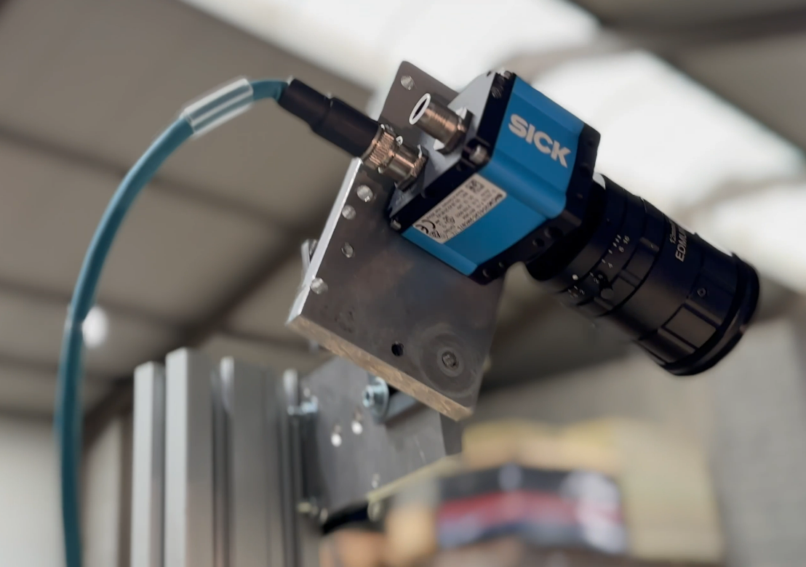
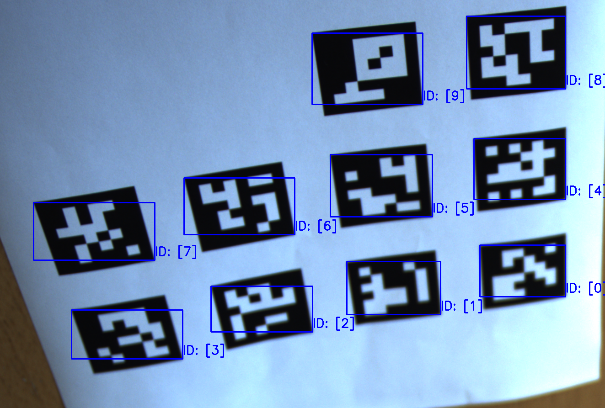
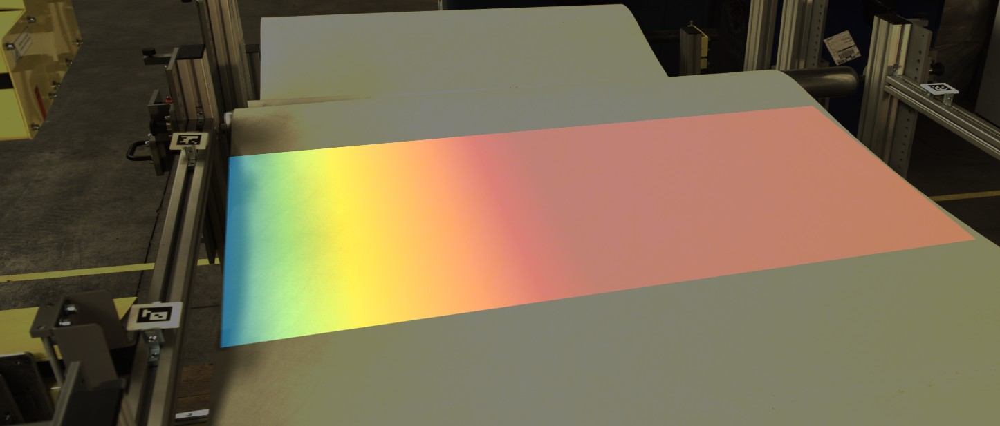
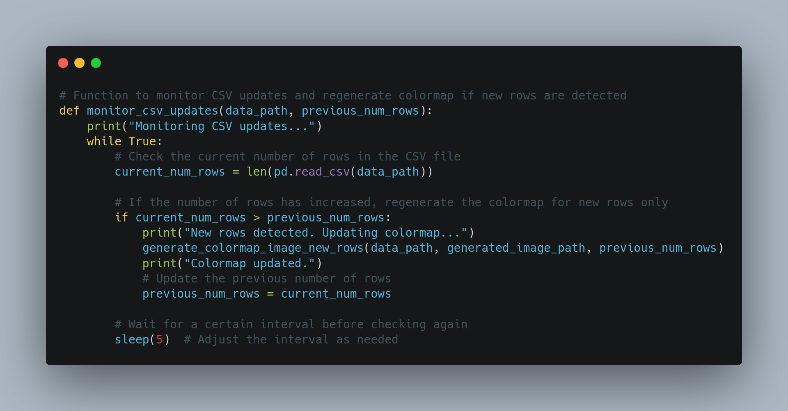

During my internship, I executed a project to develop an Augmented-Reality system that dynamically visualizes measurement data results in an overlaid color-map spectrum image. Here’s an overview consisting of the demonstration video, development process, technical implementations, results achieved and documentation.
I established connectivity between a high-end SICK camera and the Harvester library to capture live video feed. Using OpenCV, I displayed this feed, ensuring seamless integration with the existing framework. Functionality was demonstrated through code snippets and screenshots.
SICK Camera Sensor: High-quality cameras used in industrial settings. They are designed for precise tasks such as inspecting products, measuring objects, and recognizing items in automated systems, ensuring high accuracy and reliability.
I implemented robust ArUco marker detection using OpenCV for edge detection of the material. This included applying offsets to marker positions for enhanced accuracy and precision, validated through code snippets and visual representations.
ArUco Markers: Special square patterns that help cameras recognize and track objects. Each marker has a unique ID, making them useful for applications like augmented reality, robot navigation, and object tracking. In my case, I use the ArucoMArkers to detect the edges of the material we are testing.
Apply homography transformation to map detected coordinates to a fixed reference system and enable Augmented Reality (AR) overlay.
Homography: Homography is a technique in computer vision that transforms the perspective of an image. It is used to correct distortions and align images taken from different viewpoints, which is essential for tasks like image stitching and augmented reality.
Using Matplotlib and Pandas, I generated colormap images based on basis weight measurement data produced by the quality assurance machine and overlaid them onto the live feed for real-time AR visualization. This process was illustrated with code snippets and demonstrations.
Matplotlib: Matplotlib is a Python library used for creating visualizations, such as plots and charts, to represent data in a graphical format.
Pandas: Pandas is a Python library used for data manipulation and analysis. It provides data structures and functions needed to work seamlessly with structured data, such as tables, making it easier to clean, transform, and analyze data sets.
I implemented a system for real-time monitoring of a CSV file, which is continuously updated by the OptiMIS system. The data from this file was used to generate dynamic colormap images that were overlaid onto the live feed for real-time visualization.
Continuous Monitoring of CSV File: Involves automatically checking the file for new data entries and updating the system in real-time. This ensures that the latest data is always available for processing and analysis without manual updates.
The project was successfully completed, demonstrating the potential of AR in enhancing data visualization and process optimization. Future steps include refining the AR overlay accuracy and expanding the system’s capabilities for broader industrial applications.